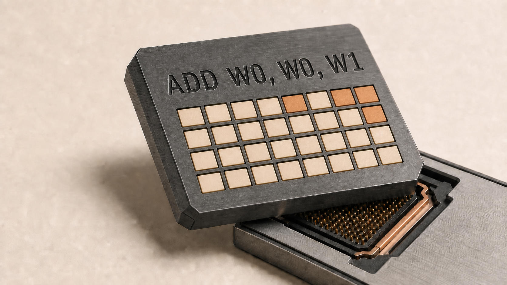
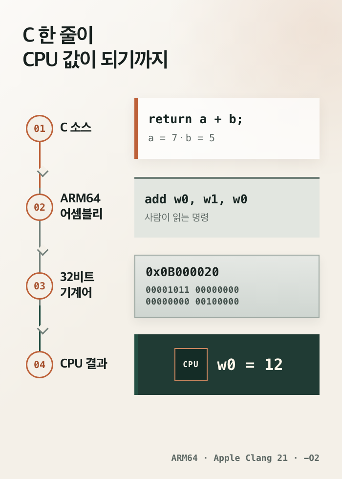

안녕하세요. dev.log입니다.
Python이나 JavaScript에서 덧셈은 한 줄이면 끝납니다. 그런데 CPU는 변수명이나 return을 읽지 못합니다. 어셈블리어는 CPU가 실행할 명령을 사람이 읽을 수 있는 기호로 적은 언어입니다. 오늘날에는 앱 전체를 작성하기보다 부팅, 하드웨어 제어, 성능 분석, 보안처럼 컴퓨터의 낮은 층을 직접 확인해야 할 때 주로 만납니다.
이 글의 ARM64 예제는 Apple Silicon Mac에서 C 코드를 직접 컴파일하고, 오브젝트 파일의 기계어까지 확인한 결과입니다.

고급 언어와 기계어 사이의 한 층
Clang의 도구 사슬 문서는 변환 과정을 소스 코드 -> 중간 표현 -> 대상별 어셈블리 -> 기계어 오브젝트 -> 실행 파일로 나눕니다. 컴파일러의 백엔드가 ARM64나 x86-64에 맞는 어셈블리 명령을 고르고, 어셈블러가 그 기호를 CPU가 해석할 비트 패턴으로 바꿉니다. 실제 빌드에서는 속도를 위해 중간 파일을 만들지 않고 여러 단계를 합치기도 합니다.
레지스터는 CPU 안에서 계산할 값과 주소를 잠시 담는 작은 저장 공간입니다. 이 글의 w0, w1 같은 이름이 레지스터를 가리킵니다. A64는 Arm의 64비트 명령 집합이며, Arm 안내서에 따르면 각 명령은 32비트 길이로 인코딩됩니다.
| 층 | 덧셈의 표현 | 읽는 주체 |
|---|---|---|
| C 소스 | return a + b; | 개발자와 컴파일러 |
| ARM64 어셈블리 | add w0, w0, w1 | 개발자와 어셈블러 |
| A64 명령 인코딩 | 0x0B010000 | CPU와 분석 도구 |
| 실행 결과 | w0 = 12 | 다음 명령 또는 호출자 |
어셈블리어와 기계어는 같은 명령을 서로 다른 표기로 나타냅니다. add는 사람이 기억할 니모닉(mnemonic)이고, 0x0B010000은 이번 ARM64 오브젝트에서 확인한 32비트 인코딩입니다. 레이블과 주석은 사람이 코드를 구성하도록 돕고, CPU에는 인코딩된 명령만 전달됩니다.
위 표는 직접 작성한 add w0, w0, w1을 기준으로 합니다. 아래 그림은 같은 C 함수를 Clang -O2로 컴파일한 결과입니다. 덧셈은 두 입력의 순서를 바꿔도 결과가 같기 때문에 Clang은 add w0, w1, w0을 골랐고, 그 인코딩은 0x0B000020이었습니다.

CPU마다 명령 집합이 다르므로 어셈블리어도 여러 갈래로 나뉩니다. GNU 어셈블러 문서도 대상 컴퓨터에 따라 인식하는 명령이 달라진다고 설명합니다. ARM64, x86-64, RISC-V는 서로 다른 명령을 사용하며, 같은 x86에서도 Intel 표기와 AT&T 표기가 나뉩니다. 아래 코드는 이 글에서 직접 생성하고 디스어셈블한 ARM64 예시입니다.
덧셈 두 줄에서 익히는 기본 표기
먼저 C 함수 하나를 보겠습니다.
int add(int a, int b) {
return a + b;
}같은 동작을 ARM64 어셈블리로 직접 작성하면 두 명령이면 충분합니다.
.text
.globl _asm_add
.p2align 2
_asm_add:
add w0, w0, w1
retadd는 더하고, ret는 함수를 호출한 위치로 돌아갑니다. 쉼표 뒤의 첫 피연산자 w0가 결과를 받을 곳입니다. 나머지 w0와 w1은 더할 두 값입니다.
응용 프로그램 이진 인터페이스(ABI)는 컴파일된 함수들이 인자와 결과를 주고받는 규칙입니다. Arm의 AAPCS64 호출 규약에 따르면 정수 인자와 반환값은 먼저 x0부터 x7까지의 레지스터를 사용합니다. x0는 64비트 전체, w0는 같은 레지스터의 아래 32비트를 가리킵니다. 이 함수는 32비트 int 두 개를 받으므로 첫 인자는 w0, 둘째는 w1에 들어오고 결과도 w0로 돌아갑니다.
2026년 8월 31일 Codex가 이 함수를 어셈블해 C에서 호출한 결과는 다음과 같았습니다.
asm_add(7, 5) = 12
asm_add(-4, 9) = 5
asm_add(1000000, 234567) = 1234567여기에는 작지만 중요한 함정이 있었습니다. macOS의 C 코드는 외부 심볼 _asm_add를 찾는데, 첫 소스는 밑줄 없는 asm_add만 공개해 링크에 실패했습니다. 명령 두 줄을 정확히 써도 운영체제의 오브젝트 형식과 호출 규약을 맞추지 않으면 다른 언어와 연결되지 않습니다.
절댓값 함수에서 만나는 조건 플래그
ARM64에서 절댓값 함수를 -O2로 컴파일하자 비교와 조건부 부호 반전 명령이 생성됐습니다.
int absolute_value(int x) {
return x < 0 ? -x : x;
}_absolute_value:
cmp w0, #0
cneg w0, w0, mi
retcmp w0, #0은 입력을 0과 비교해 조건 플래그를 바꿉니다. cneg는 비교 결과가 음수 조건(mi)일 때만 부호를 뒤집습니다. 컴파일러는 C의 조건식을 별도 분기 없이 ARM64의 조건부 명령으로 표현했습니다.
이 C 예제에는 입력 한계가 있습니다. int의 최솟값 INT_MIN은 같은 자료형의 양수로 표현할 수 없으므로 -x에서 부호 있는 정수 오버플로가 발생합니다. Clang도 표현 범위를 벗어난 부호 있는 정수 연산을 정의되지 않은 동작으로 검사합니다. 아래 설명은 INT_MIN을 제외한 입력에만 적용됩니다.
포인터가 가리킨 값을 읽는 ldr
어셈블리어는 값 대부분을 레지스터에서 계산합니다. 메모리에 있는 값이 필요하면 먼저 로드 명령으로 가져오고, 결과를 메모리에 남기려면 스토어 명령을 사용합니다. 포인터가 가리킨 정수에 1을 더하는 C 함수는 다음과 같이 바뀌었습니다.
int load_plus_one(const int *value) {
return *value + 1;
}_load_plus_one:
ldr w8, [x0]
add w0, w8, #1
ret두 번째 함수에서 x0에는 정수 자체가 아니라 메모리 주소가 들어옵니다. 대괄호를 쓴 [x0]는 그 주소가 가리키는 메모리를 뜻합니다. ldr가 값을 w8로 읽고, add가 숫자 1을 더해 반환 레지스터 w0에 둡니다. #1처럼 #이 붙은 값은 레지스터가 아니라 명령 안에 적힌 즉시값입니다.
다른 함수를 부를 때 지키는 레지스터 규칙
함수 안에서 다른 함수를 호출하면 보존할 상태가 늘어납니다. add(a, b)의 결과를 두 배로 만드는 C 코드에는 스택 작업이 추가됩니다.
int add_then_double(int a, int b) {
return add(a, b) * 2;
}_add_then_double:
stp x29, x30, [sp, #-16]!
mov x29, sp
bl _add
lsl w0, w0, #1
ldp x29, x30, [sp], #16
retbl _add는 돌아올 주소를 링크 레지스터인 x30에 남기고 다른 함수로 이동합니다. 이 함수도 나중에 호출자에게 돌아가야 하므로, stp가 프레임 포인터 x29와 x30을 스택에 보관합니다. 호출이 끝나면 lsl이 결과의 비트를 왼쪽으로 한 칸 밀어 2를 곱하고, ldp가 보관한 두 레지스터를 복원합니다.
이 코드를 무조건 외울 필요는 없습니다. 호출 전에는 누구의 값을 보존할지, 인자는 어디에 둘지, 결과는 어디에서 받을지를 CPU가 알아서 정하지 않는다는 점이 중요합니다. 서로 다른 언어와 라이브러리가 연결되는 이유는 AAPCS64 같은 ABI가 이 약속을 정하기 때문입니다.
최적화 단계가 바꾼 명령의 수
같은 C 함수라도 어셈블리 출력은 하나로 고정되지 않습니다. 실험에서 add를 최적화 없이 -O0로 컴파일했을 때에는 다음과 같이 인자를 스택에 저장했다가 다시 읽었습니다.
sub sp, sp, #16
str w0, [sp, #12]
str w1, [sp, #8]
ldr w8, [sp, #12]
ldr w9, [sp, #8]
add w0, w8, w9
add sp, sp, #16
ret-O2에서는 같은 의미가 add w0, w1, w0와 ret로 줄었습니다. 이 표본은 최적화 단계가 생성 코드를 바꾼다는 사실만 보여 주며 실행 시간은 재지 않았습니다. 컴파일러 버전과 대상 CPU가 달라져도 고급 언어 한 줄에 대응하는 명령이 바뀔 수 있습니다. 그래서 디버거에서 소스 줄과 명령을 함께 보더라도 일대일로 맞지 않을 수 있습니다.
어셈블리어를 직접 쓰는 다섯 영역
일반 앱의 화면과 업무 규칙을 어셈블리어로 작성하는 일은 드뭅니다. 대신 고급 언어가 닿기 전이나, 생성된 기계어가 문제의 원인인 곳에서는 현재도 직접 사용합니다.
| 쓰이는 곳 | 어셈블리어가 필요한 이유 | 실제 단서 |
|---|---|---|
| 부팅과 운영체제 진입부 | 스택·메모리 관리 장치(MMU)·CPU 모드처럼 C 런타임 전에 필요한 상태를 설정 | Linux ARM64의 head.S |
| 마이크로컨트롤러 시작·인터럽트 | 리셋 벡터와 초기 스택, 핸들러 주소를 하드웨어 형식에 맞춤 | Arm Cortex-M 시작 코드 설명 |
| 암호·미디어의 좁은 핵심 루프 | 특정 CPU 명령과 레지스터 배치를 세밀하게 선택 | OpenSSL의 현재 x86-64 AES 소스 |
| 컴파일러·런타임·언어 구현 | 고급 언어를 대상 CPU 명령으로 내리거나 언어 경계를 연결 | Clang의 백엔드와 어셈블러 단계 |
| 디버깅·성능 분석·보안 분석 | 충돌 주소와 실제 실행 명령을 연결하고 바이너리 동작을 확인 | GDB의 소스·기계어 보기 |
Linux 커널 문서도 커널이 주로 C로 작성되며 일부 아키텍처 의존부가 어셈블리라고 설명합니다. 이 조합이 현재 위치를 잘 보여 줍니다. 큰 구조는 C·C++·Rust 같은 언어로 관리하고, 하드웨어 경계의 작은 부분만 어셈블리어가 맡습니다.
어셈블리어의 장단점
어셈블리어의 장점은 “무조건 빠르다”보다 무슨 명령이 실행되는지 직접 선택하고 확인할 수 있다는 데 있습니다.
- 특정 시스템 레지스터나 CPU 명령처럼 고급 언어가 바로 드러내지 않는 기능에 접근할 수 있습니다.
- 함수 호출, 메모리 접근, 분기를 실제 명령 단위로 추적할 수 있어 충돌과 성능 병목을 분석하기 좋습니다.
- 부팅 코드나 인터럽트 진입부처럼 런타임이 준비되기 전의 짧은 경로를 만들 수 있습니다.
- 컴파일러가 만든 코드를 검토하면 고급 언어의 비용과 최적화 결과를 구체적으로 확인할 수 있습니다.
그 대가는 코드가 CPU와 플랫폼에 밀착된다는 점입니다.
- ARM64 코드는 x86-64에서 그대로 실행되지 않으며, 같은 ARM64에서도 운영체제 ABI와 오브젝트 형식이 다를 수 있습니다.
- 자료형, 변수 수명, 자동 메모리 관리 같은 고급 언어의 보호 장치가 약해 작은 실수가 레지스터나 스택을 망가뜨릴 수 있습니다.
- 명령 수가 적다고 실제 CPU에서 항상 빠른 것은 아닙니다. 파이프라인, 캐시, 분기 예측까지 고려해야 하며 컴파일러가 주변 코드 전체를 보며 적용하는 최적화를 막을 수도 있습니다.
- 사람이 읽고 수정할 정보량이 커서 같은 기능을 개발하고 검증하는 비용이 높습니다.
성능이 목적이어도 먼저 알고리즘과 메모리 접근을 고급 언어에서 개선하고 프로파일러로 병목을 확인해야 합니다. 특정 명령만 필요하다면 컴파일러 내장 함수가 이식성과 최적화 정보를 더 잘 보존하기도 합니다. 직접 작성한 어셈블리는 마지막에 남은 좁고 측정 가능한 경로에 두는 편이 관리하기 쉽습니다.
2026년에는 얼마나 직접 작성할까
2026년 현재 어셈블리어는 일반 애플리케이션의 주력 언어보다 저수준 전문 도구에 가깝습니다. 이 글에서 확인한 프로젝트와 도구는 직접 작성하는 영역을 특정 기능에 한정하면서, 코드를 읽고 다른 언어와 연결하는 기능을 계속 제공합니다.
Microsoft의 x64 도구 문서는 x64와 ARM64에서 인라인 어셈블러를 지원하지 않습니다. 대안은 C++, 컴파일러 내장 함수, 별도 어셈블리 소스 파일입니다. GCC의 extended asm과 Rust 안정판의 asm!은 저수준 명령을 연결하는 통로를 계속 제공합니다. Linux와 OpenSSL 저장소에도 아키텍처별 어셈블리 코드가 남아 있습니다.
이 자료를 함께 보면 현대의 어셈블리어는 세 역할로 정리됩니다.
- 컴파일러가 생성하는 결과 형식입니다.
- 디버거와 프로파일러가 프로그램을 들여다보는 관찰 형식입니다.
- 부팅·암호·런타임의 작은 핵심부를 작성하는 전문 구현 언어입니다.
웹 서비스나 모바일 앱은 생산성이 높은 고급 언어로 시작하는 편이 맞습니다. 운영체제, 임베디드, 컴파일러, 리버스 엔지니어링, 고성능 라이브러리를 다룬다면 어셈블리어를 읽는 능력만으로도 문제를 더 낮은 층에서 확인할 수 있습니다.
입문자가 익힐 실용적인 범위
처음부터 ARM64 명령 전체를 외우지 않아도 됩니다. 지금 사용하는 컴퓨터의 함수 하나를 골라 다음 순서로 확인해 보세요.
clang -S -O2 file.c -o file.s로 어셈블리 파일을 만듭니다.- 함수 레이블을 찾고
mov,add,sub,ldr,str,cmp,b,bl,ret부터 읽습니다. - 첫 인자와 반환값이 어느 레지스터에 있는지 해당 플랫폼의 ABI 문서에서 확인합니다.
clang -c -O2 file.c -o file.o로 디스어셈블할 오브젝트 파일을 만듭니다.objdump -d file.o나 디버거의 디스어셈블 기능으로 명령 인코딩과 주소를 연결합니다.-O0과-O2를 비교하되, 명령 수를 성능 결과로 단정하지 않습니다.
덧셈 함수에서 출발해 조건문, 메모리 로드, 함수 호출까지 읽었다면 명령표 암기보다 중요한 감각을 얻은 것입니다. 고급 언어 한 줄에 대응하는 명령은 컴파일러와 CPU·ABI가 함께 결정합니다. 다음에 충돌 주소나 프로파일러의 병목 함수를 만났을 때 그 과정을 거꾸로 따라가 보세요. 어셈블리어를 처음 실용적으로 써 보는 순간입니다.